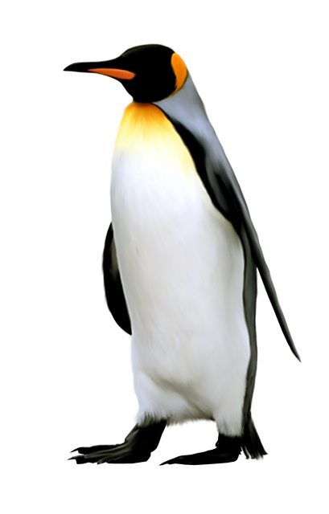

| Hewan |
Ciri-ciri |
|
Memiliki jengger di kepalanya
Memiliki 2 kaki dengan 4 jari kaki
Memiliki sayap tapi tidak bisa terbang tinggi
Memiliki pial di bawah paruhnya
Maruh yang digunakan untuk mematuk makanan
|
|
Memiliki tubuh yang bulat dan gemuk
Memiliki paruh yang lebar dan datar
Memiliki kaki yang berselaput untuk berenang
Memiliki bulu yang tahan air
Memiliki sayap yang kuat untuk terbang
|
|
Memiliki tubuh yang tinggi dan ramping
Memiliki kaki yang panjang dan kurus
Memiliki leher yang panjang dan melengkung
Memiliki paruh yang bengkok ke bawah
Memiliki sayap yang besar dan kuat untuk terbang
|
 |
Memiliki kaki belakang yang besar dan kuat untuk melompat
Memiliki kaki depan yang kecil dan untuk mengambil makanan
Memiliki ekor yang panjang dan kuat untuk keseimbangan
Memiliki kantung di perut untuk membawa anaknya
Memiliki bulu berwarna coklat, abu-abu, atau putih
|
|  |
Memiliki tubuh yang pendek dan gemuk
Memiliki sayap yang pendek dan kaku, tidak dapat terbang
Memiliki kaki yang pendek dan kuat untuk berenang
Memiliki bulu yang tebal dan tahan air
Memiliki paruh yang panjang dan runcing untuk menangkap mangsa
|
| Hewan |
Ciri-ciri |
 |
Memiliki tubuh yang besar dan kuat
Memiliki bulu berwarna oranye dengan garis-garis hitam
Memiliki kaki yang kuat untuk berlari
Memiliki gigi dan cakar yang tajam untuk berburu
Memiliki ekor yang panjang untuk keseimbangan
|
|
Memiliki tubuh yang besar dan kuat
Memiliki kaki yang panjang dan kuat untuk berlari
Memiliki leher yang panjang dan kuat
Memiliki ekor yang panjang dan lebat
Memiliki kepala yang besar dengan mata yang besar
|
|
Memiliki tubuh yang tinggi dan ramping
Memiliki leher yang panjang
Memiliki punuk di atas punggungnya untuk menyimpan lemak
Memiliki bulu mata yang panjang dan tebal melindungi mata dari pasir
Memiliki kaki yang panjang dan kuat untuk berjalan di padang pasir
|
 |
Memiliki tubuh yang panjang dan berotot
Memiliki kepala yang besar dengan rambut tebal di sekitar leher
Memiliki kaki yang pendek dan kuat
Memiliki gigi dan cakar yang tajam untuk berburu
Memiliki ekor yang panjang dan berumbai
|
|
Memiliki tubuh yang sedang dan kekar
Memiliki bulu yang pendek dan kasar
Memiliki tanduk yang tumbuh di kepalanya, baik jantan maupun betina
Memiliki telinga yang panjang dan terjuntai
Memiliki kaki yang kuat untuk memanjat
|